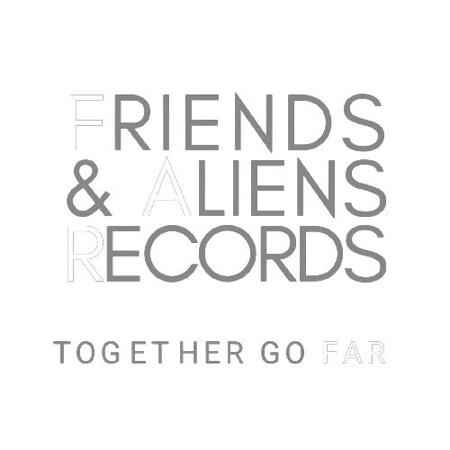

It has been said, "If you want to go fast, go alone; but if you want to go FAR, go together."
FRIENDS & ALIENS is an independent rock record label based in Brooklyn, NY,
aiming for a better model of music-making where more bands can find success - by working together.
FRIENDS & ALIENS is an oasis for the raw, collaborative, live sound of real rock & roll,
without click tracks.
The music business doesn't have to be a lonely place. Let's go far together.
REACH OUT